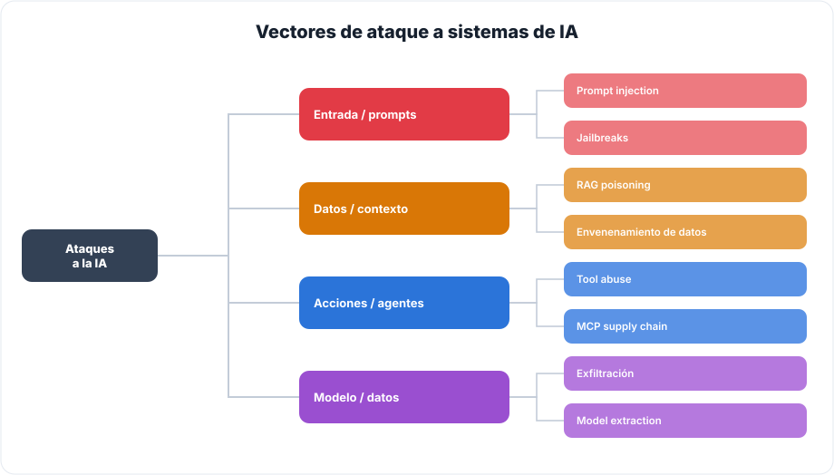
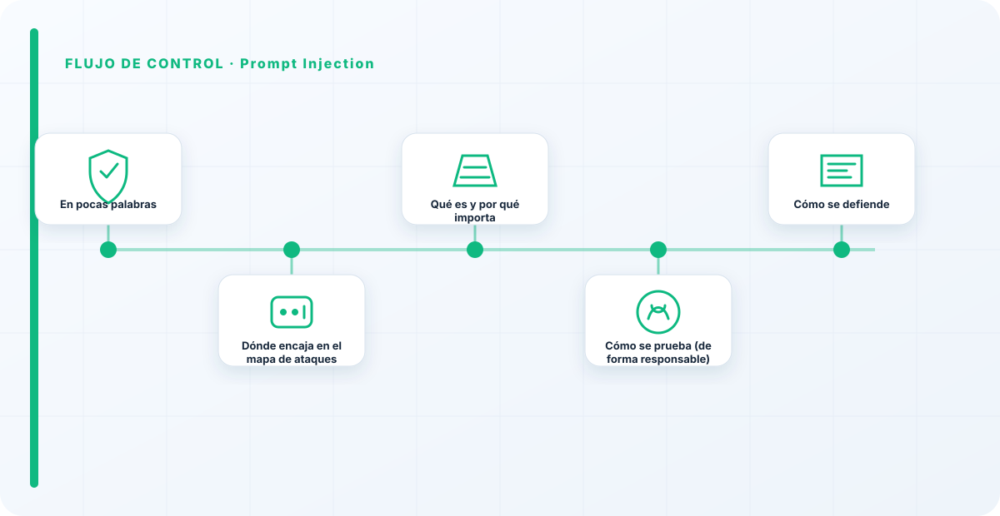
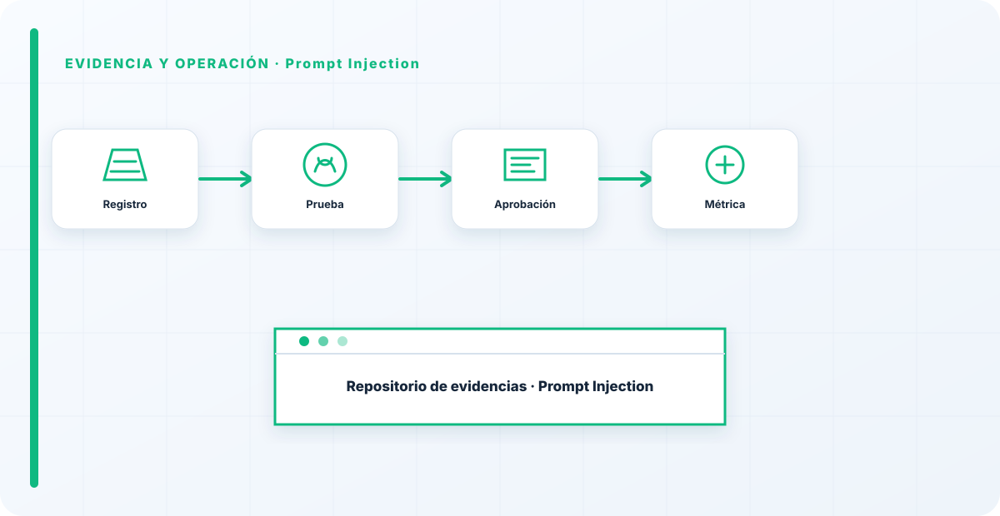

En pocas palabras
El red teaming de prompt injection consiste en ponerse en el lugar del atacante para responder a una pregunta incómoda: ¿puede alguien, con las palabras adecuadas, hacer que tu modelo ignore sus instrucciones y haga lo que quiera? Es la primera prueba que hago en cualquier sistema con LLM, porque es la más probable, la más reveladora, y la que más cuelga del resto: si puedo inyectar, puedo intentar casi todo lo demás.
Dónde encaja en el mapa de ataques
El red teaming de IA recorre varios frentes; conviene tener el mapa completo para no probar solo el ataque de moda:

Qué es y por qué importa
La prompt injection es lograr que el modelo obedezca instrucciones del atacante en vez de las tuyas. Importa porque casi todo lo demás depende de ahí: si consigo inyectar, puedo intentar sacar datos, abusar de herramientas o saltarme reglas.
Y tiene una variante especialmente traicionera, la indirecta: la instrucción no la escribe el atacante en el chat, viene escondida en un documento o una web que el sistema procesa como si fuera contenido de confianza. En sistemas con RAG o agentes, este es el vector que más gente subestima.

Cómo se prueba (de forma responsable)
Un red team serio prueba esto de forma estructurada y siempre sobre sistemas propios o con autorización expresa: cataloga todos los puntos por donde entra texto al modelo —chat, documentos, integraciones, herramientas— y comprueba sistemáticamente si el modelo puede ser desviado en cada uno, midiendo qué llega a hacer.
No se trata de coleccionar "trucos" sueltos, sino de cobertura: probar todas las entradas, no solo la obvia. Marcos como el Top 10 de OWASP para LLM y MITRE ATLAS dan la taxonomía para no dejarse frentes sin cubrir.
Cómo se defiende
La defensa es por capas, no un muro único: validar la entrada, tratar todo el contexto externo como no confiable, poner guardarraíles y —lo más importante— limitar lo que el modelo puede ejecutar, para que aunque lo secuestren, el daño sea pequeño.
Ninguna defensa lo para al 100%, así que el objetivo no es soñar con la inmunidad, es reducir la superficie y contener el impacto. Un modelo al que, aun secuestrado, solo le dejas hacer cosas inofensivas es un modelo defendido.
Por qué el system prompt no basta
Lo que más me sorprende cuando hago red teaming de inyección es cuánta gente confía en el system prompt como si fuera un muro. No lo es: es una instrucción fuerte, no una barrera técnica, y en cuanto pruebas en serio se rodea. La protección de verdad no está en pedirle mejor al modelo con instrucciones cada vez más elaboradas, sino en lo que le dejas hacer después. Esa es la lección que un buen ejercicio de red teaming graba a fuego: la inyección no se elimina, se contiene limitando privilegios.
Si un ejercicio de red teaming te enseña una sola cosa, que sea esta: la inyección no se arregla pidiéndole mejor al modelo, se contiene recortando lo que puede hacer. El system prompt convence en la demo y cede en el primer intento serio.
Los errores que veo una y otra vez
- Confiar en el system prompt como control.
- Probar solo el chat y olvidar la inyección indirecta.
- Buscar "el truco" en vez de cobertura sistemática.
- No medir qué llega a ejecutar el modelo.
- Esperar inmunidad total en vez de contener el impacto.
Cómo lo llevaría a un entorno real
Cuando aterrizo prompt injection en una organización, no empiezo por comprar una herramienta ni por redactar veinte páginas. Empiezo por dibujar qué ocurre hoy: quién solicita el cambio, quién lo aprueba, qué sistemas intervienen, qué datos cruzan el proceso y quién se entera cuando algo falla. Ese dibujo suele descubrir más problemas que cualquier checklist. En AI Red Teaming, lo peligroso no es solo carecer de controles; también lo es creer que existen porque alguien los escribió una vez.
Después separo lo imprescindible de lo deseable. Lo imprescindible debe poder comprobarse: un responsable identificado, una regla clara, una evidencia fechada y un mecanismo para reaccionar. En este caso revisaría especialmente prompt, instrucción y contexto. No me vale una respuesta del tipo «lo gestiona el proveedor» o «eso lo mira seguridad». Necesito saber qué persona toma la decisión, con qué información y dentro de qué plazo.
La implantación debe crecer con el riesgo. Un piloto interno puede funcionar con una ficha breve y una revisión manual. Un sistema que afecta a clientes, empleados, dinero o información sensible necesita segregación de funciones, pruebas independientes, monitorización y un expediente mantenido. Mi criterio es sencillo: cuanto más difícil sea deshacer el daño, más fuerte debe ser la barrera antes de producción.

Decisiones que deben quedar por escrito
Hay decisiones que no deberían vivir en una reunión ni en un mensaje de chat. Para prompt injection dejaría documentados el alcance, los supuestos, los límites de uso, las excepciones aceptadas y las condiciones que obligan a detener o reevaluar. El documento no tiene que ser enorme, pero sí debe permitir que otra persona entienda por qué se hizo lo que se hizo.
También registraría quién puede cambiar guardrail, quién valida entrada y quién recibe las alertas relacionadas con salida. Cuando esas tres responsabilidades se mezclan, aparece el clásico problema: el mismo equipo construye, aprueba y declara que todo funciona. No siempre se puede separar por completo, sobre todo en organizaciones pequeñas, pero al menos debe existir una revisión por alguien que no dependa del éxito inmediato del despliegue.
Las excepciones merecen un tratamiento propio. Una excepción sin fecha de caducidad acaba convirtiéndose en la arquitectura real. Por eso exigiría motivo, riesgo aceptado, responsable, compensaciones, fecha de revisión y criterio de cierre. Si falta uno de esos elementos, no es una excepción gestionada; es una deuda invisible.
Un ejemplo práctico
Imaginemos que un equipo quiere incorporar prompt injection a un servicio que ya está en producción. La propuesta promete reducir tiempos y automatizar tareas, pero utiliza componentes que cambian con frecuencia. Antes de aprobarlo, pediría una prueba limitada, un inventario de dependencias, un flujo de datos y una definición clara de qué acciones quedan fuera del alcance.
Durante la prueba recogería resultados normales y casos límite. No solo miraría si funciona; comprobaría qué ocurre cuando faltan datos, cambia una versión, se pierde conectividad, llega una entrada manipulada o un usuario intenta superar sus permisos. Ahí es donde se ve si el diseño aguanta. En muchas pruebas felices todo parece seguro porque nadie ha intentado romper la hipótesis de partida.
Si los resultados son aceptables, la salida a producción tendría condiciones: versión fijada, configuración aprobada, logs disponibles, responsables de guardia, procedimiento de rollback y revisión tras las primeras semanas. Si alguno de esos elementos no existe, prefiero retrasar el despliegue. Un día de demora suele ser más barato que investigar después un comportamiento que nadie puede reconstruir.
Qué evidencias guardaría
Para demostrar que el control funciona conservaría evidencias que cuenten una historia completa, no capturas sueltas. La historia debe enlazar necesidad, decisión, implementación, prueba y operación. En prompt injection eso incluye como mínimo la ficha del activo, el diagrama vigente, la configuración aprobada, el resultado de las pruebas y el registro de cambios.
No guardaría información por acumular. Si los logs contienen prompts, documentos, datos personales o secretos, aplicaría minimización, control de acceso y retención. La evidencia debe ayudar a investigar y auditar sin crear una segunda fuga de información. Es frecuente endurecer el sistema principal y dejar un repositorio de evidencias abierto a demasiadas personas.
- Propietario y finalidad de prompt injection, con fecha de revisión.
- Inventario de prompt, instrucción y dependencias asociadas.
- Criterios de aceptación y resultados sobre contexto y guardrail.
- Configuración efectiva, versión y aprobación del cambio.
- Alertas, incidentes, excepciones y acciones correctivas cerradas.
Señales de que el control no está funcionando
El primer síntoma es que nadie sabe responder con rapidez quién es el responsable. El segundo es que la documentación describe una versión distinta de la que está operando. El tercero es que las alertas existen, pero llegan a un buzón que nadie revisa. Cuando aparecen esos tres síntomas, el problema no es tecnológico: el control se ha desconectado de la operación.
También desconfío de las métricas demasiado perfectas. Cero incidentes, cero excepciones y cien por cien de cumplimiento pueden significar excelencia, pero con frecuencia significan que no estamos mirando. Prefiero indicadores que enseñen tendencia: tiempo de corrección, antigüedad de excepciones, cobertura de pruebas, cambios sin revisión y reincidencias.
Por último, revisaría el comportamiento después de cada cambio significativo. En IA, una actualización de modelo, dataset, prompt, herramienta, permiso o proveedor puede alterar el riesgo sin cambiar el nombre del servicio. Si el proceso solo reevalúa cuando se crea un proyecto nuevo, se quedará ciego durante la mayor parte de la vida útil.
Mi criterio de cierre
Considero que prompt injection está razonablemente controlado cuando el equipo puede explicar el proceso sin depender de una sola persona, reconstruir una decisión con evidencias y detener el servicio sin improvisar. No busco perfección documental; busco que la organización pueda tomar decisiones repetibles bajo presión.
El cierre no consiste en marcar todas las casillas. Consiste en demostrar que los riesgos relevantes tienen propietario, que los controles se prueban y que las desviaciones producen una acción. Si la evidencia no cambia ninguna decisión, probablemente estamos generando burocracia. Si una decisión importante no deja evidencia, estamos creando fragilidad.
Este enfoque es el que intento mantener en toda CyberLibrary AI: explicar el control de forma que lo entienda negocio, pero con suficiente profundidad para que arquitectura, seguridad, auditoría y operaciones puedan aplicarlo de verdad.
Referencias y marcos relacionados
Contenido educativo y defensivo. Las pruebas de seguridad solo deben hacerse sobre sistemas propios o con autorización expresa.